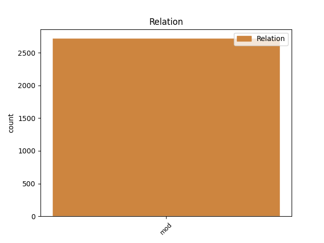
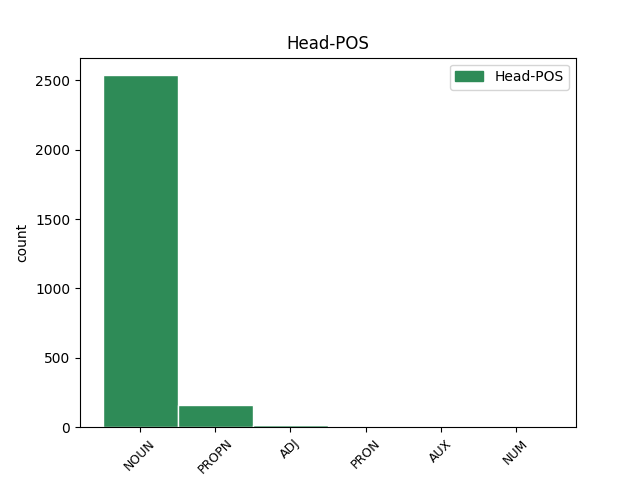
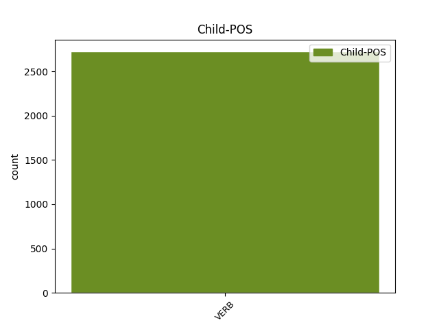

Distribution of features within this leaf



Agreement Rules sorted by frequency.
- When the dependent token is the modifer(mod) of the head token, and the head token is NOUN and the dependent token is VERB.
1 Tekijät _ _ _ _ 0 _ _ _
2 ovat _ _ _ _ 0 _ _ _
3 autonomiseen _ _ _ _ 0 _ _ _
4 vasemmistoon _ _ _ _ 0 _ _ _
5 kuuluvia kuulua VERB V Case=Par|Degree=Pos|Number=Plur|PartForm=Pres|VerbForm=Part|Voice=Act 6 mod _ _
6 henkilöitä henkilö NOUN N Case=Par|Number=Plur 0 _ _ _
7 , _ _ _ _ 0 _ _ _
8 jotka _ _ _ _ 0 _ _ _
9 tavallisesti _ _ _ _ 0 _ _ _
10 esiintyvät _ _ _ _ 0 _ _ _
11 nimikkeiden _ _ _ _ 0 _ _ _
12 " _ _ _ _ 0 _ _ _
13 Antifascistisk _ _ _ _ 0 _ _ _
14 aktion _ _ _ _ 0 _ _ _
15 " _ _ _ _ 0 _ _ _
16 tai _ _ _ _ 0 _ _ _
17 " _ _ _ _ 0 _ _ _
18 Revolutionära _ _ _ _ 0 _ _ _
19 fronten _ _ _ _ 0 _ _ _
20 " _ _ _ _ 0 _ _ _
21 alla _ _ _ _ 0 _ _ _
22 . _ _ _ _ 0 _ _ _
1 Wikimedia-säätiön _ _ _ _ 0 _ _ _
2 käytännön _ _ _ _ 0 _ _ _
3 toimintaa _ _ _ _ 0 _ _ _
4 johti _ _ _ _ 0 _ _ _
5 puolen _ _ _ _ 0 _ _ _
6 vuoden _ _ _ _ 0 _ _ _
7 ajan _ _ _ _ 0 _ _ _
8 muun _ _ _ _ 0 _ _ _
9 muassa _ _ _ _ 0 _ _ _
10 shekki- _ _ _ _ 0 _ _ _
11 ja _ _ _ _ 0 _ _ _
12 luottokorttipetoksista _ _ _ _ 0 _ _ _
13 tuomittu tuomita VERB V Case=Nom|Degree=Pos|Number=Sing|PartForm=Past|VerbForm=Part|Voice=Pass 14 mod _ _
14 Carolyn Carolyn PROPN N Case=Nom|Number=Sing 0 _ _ _
15 Doran _ _ _ _ 0 _ _ _
16 . _ _ _ _ 0 _ _ _
1 Ohitan _ _ _ _ 0 _ _ _
2 matkalla _ _ _ _ 0 _ _ _
3 jotenkin _ _ _ _ 0 _ _ _
4 harmistuneen harmistua VERB V Case=Gen|Degree=Pos|Number=Sing|PartForm=Past|VerbForm=Part|Voice=Act 5 mod _ _
5 näköisen näköinen ADJ A Case=Gen|Degree=Pos|Derivation=Inen|Number=Sing 0 _ _ _
6 vartijan _ _ _ _ 0 _ _ _
7 joka _ _ _ _ 0 _ _ _
8 ei _ _ _ _ 0 _ _ _
9 ehdi _ _ _ _ 0 _ _ _
10 suutaan _ _ _ _ 0 _ _ _
11 avata _ _ _ _ 0 _ _ _
12 . _ _ _ _ 0 _ _ _
1 Mies _ _ _ _ 0 _ _ _
2 laahustaa _ _ _ _ 0 _ _ _
3 kultaisen _ _ _ _ 0 _ _ _
4 kävelykeppinsä _ _ _ _ 0 _ _ _
5 kanssa _ _ _ _ 0 _ _ _
6 kohti _ _ _ _ 0 _ _ _
7 katua _ _ _ _ 0 _ _ _
8 , _ _ _ _ 0 _ _ _
9 joka _ _ _ _ 0 _ _ _
10 on _ _ _ _ 0 _ _ _
11 täynnä _ _ _ _ 0 _ _ _
12 lapsiperheitä _ _ _ _ 0 _ _ _
13 , _ _ _ _ 0 _ _ _
14 niitä se PRON Pron Case=Par|Number=Plur|PronType=Dem 0 _ _ _
15 niin _ _ _ _ 0 _ _ _
16 normaalia _ _ _ _ 0 _ _ _
17 elämää _ _ _ _ 0 _ _ _
18 eläviä elää VERB V Case=Par|Degree=Pos|Number=Plur|PartForm=Pres|VerbForm=Part|Voice=Act 14 mod _ SpaceAfter=No
19 , _ _ _ _ 0 _ _ _
20 iloisia _ _ _ _ 0 _ _ _
21 . _ _ _ _ 0 _ _ _
1 * _ _ _ _ 0 _ _ _
2 1978 _ _ _ _ 0 _ _ _
3 – _ _ _ _ 0 _ _ _
4 Ilmailu _ _ _ _ 0 _ _ _
5 : _ _ _ _ 0 _ _ _
6 Tilauslennolla _ _ _ _ 0 _ _ _
7 ollut olla VERB V Case=Nom|Degree=Pos|Number=Sing|PartForm=Past|VerbForm=Part|Voice=Act 8 mod _ _
8 DC-8 DC#8 NUM Num Case=Nom|Number=Sing|NumType=Card 0 _ _ _
9 syöksyi _ _ _ _ 0 _ _ _
10 maahan _ _ _ _ 0 _ _ _
11 Colombon _ _ _ _ 0 _ _ _
12 lähellä _ _ _ _ 0 _ _ _
13 Sri _ _ _ _ 0 _ _ _
14 Lankassa _ _ _ _ 0 _ _ _
15 , _ _ _ _ 0 _ _ _
16 183 _ _ _ _ 0 _ _ _
17 ihmistä _ _ _ _ 0 _ _ _
18 sai _ _ _ _ 0 _ _ _
19 surmansa _ _ _ _ 0 _ _ _
20 . _ _ _ _ 0 _ _ _
Disagree Examples:
1 Hytin _ _ _ _ 0 _ _ _
2 valaistus valaistus NOUN N Case=Nom|Number=Sing 0 _ _ _
3 yhdistettynä yhdistää VERB V Case=Ess|Degree=Pos|Number=Sing|PartForm=Past|VerbForm=Part|Voice=Pass 2 mod _ _
4 kämäiseen _ _ _ _ 0 _ _ _
5 pokkariini _ _ _ _ 0 _ _ _
6 tekevät _ _ _ _ 0 _ _ _
7 vaan _ _ _ _ 0 _ _ _
8 optisia _ _ _ _ 0 _ _ _
9 temppujaan _ _ _ _ 0 _ _ _
10 . _ _ _ _ 0 _ _ _
1 No _ _ _ _ 0 _ _ _
2 , _ _ _ _ 0 _ _ _
3 pakko _ _ _ _ 0 _ _ _
4 on _ _ _ _ 0 _ _ _
5 tunnustaa _ _ _ _ 0 _ _ _
6 , _ _ _ _ 0 _ _ _
7 että _ _ _ _ 0 _ _ _
8 vaikka _ _ _ _ 0 _ _ _
9 kotona _ _ _ _ 0 _ _ _
10 ei _ _ _ _ 0 _ _ _
11 herkkupaloja herkku#pala NOUN N Case=Par|Number=Plur 0 _ _ _
12 tällä _ _ _ _ 0 _ _ _
13 hetkellä _ _ _ _ 0 _ _ _
14 olekaan _ _ _ _ 0 _ _ _
15 hetkellistä _ _ _ _ 0 _ _ _
16 makeanhimoa _ _ _ _ 0 _ _ _
17 tyydyttämään tyydyttää VERB V Case=Ill|InfForm=3|Number=Sing|VerbForm=Inf|Voice=Act 11 mod _ SpaceAfter=No
18 , _ _ _ _ 0 _ _ _
19 niin _ _ _ _ 0 _ _ _
20 työpaikalta _ _ _ _ 0 _ _ _
21 niitä _ _ _ _ 0 _ _ _
22 löytyy _ _ _ _ 0 _ _ _
23 … _ _ _ _ 0 _ _ _
1 Sen _ _ _ _ 0 _ _ _
2 jälkeen _ _ _ _ 0 _ _ _
3 ( _ _ _ _ 0 _ _ _
4 tai _ _ _ _ 0 _ _ _
5 vaikka _ _ _ _ 0 _ _ _
6 ennen _ _ _ _ 0 _ _ _
7 sitä _ _ _ _ 0 _ _ _
8 ) _ _ _ _ 0 _ _ _
9 voi _ _ _ _ 0 _ _ _
10 hakea _ _ _ _ 0 _ _ _
11 kirjastosta _ _ _ _ 0 _ _ _
12 mielenkiintoisia _ _ _ _ 0 _ _ _
13 , _ _ _ _ 0 _ _ _
14 kiehtovia _ _ _ _ 0 _ _ _
15 ja _ _ _ _ 0 _ _ _
16 avartavia _ _ _ _ 0 _ _ _
17 teoksia teos NOUN N Case=Par|Number=Plur 0 _ _ _
18 liittyen liittyä VERB V Case=Ins|InfForm=2|Number=Sing|VerbForm=Inf|Voice=Act 17 mod _ _
19 hyvää _ _ _ _ 0 _ _ _
20 tekevään _ _ _ _ 0 _ _ _
21 ravintoon _ _ _ _ 0 _ _ _
22 . _ _ _ _ 0 _ _ _
1 Syynä _ _ _ _ 0 _ _ _
2 voi _ _ _ _ 0 _ _ _
3 toki _ _ _ _ 0 _ _ _
4 olla _ _ _ _ 0 _ _ _
5 pätkän _ _ _ _ 0 _ _ _
6 natsityyli natsi#tyyli NOUN N Case=Nom|Number=Sing 0 _ _ _
7 mahtipontisella _ _ _ _ 0 _ _ _
8 musiikilla _ _ _ _ 0 _ _ _
9 varustettuna varustaa VERB V Case=Ess|Degree=Pos|Number=Sing|PartForm=Past|VerbForm=Part|Voice=Pass 6 mod _ SpaceAfter=No
10 , _ _ _ _ 0 _ _ _
11 propagandaa _ _ _ _ 0 _ _ _
12 vaiko _ _ _ _ 0 _ _ _
13 ei _ _ _ _ 0 _ _ _
14 … _ _ _ _ 0 _ _ _
1 Ostin _ _ _ _ 0 _ _ _
2 nimittäin _ _ _ _ 0 _ _ _
3 Arduinon _ _ _ _ 0 _ _ _
4 , _ _ _ _ 0 _ _ _
5 tarkemmin _ _ _ _ 0 _ _ _
6 sanottuna sanoa VERB V Case=Ess|Degree=Pos|Number=Sing|PartForm=Past|VerbForm=Part|Voice=Pass 7 mod _ _
7 Arduino Arduino PROPN N Case=Nom|Number=Sing 0 _ _ _
8 Unon _ _ _ _ 0 _ _ _
9 , _ _ _ _ 0 _ _ _
10 joka _ _ _ _ 0 _ _ _
11 on _ _ _ _ 0 _ _ _
12 avoimen _ _ _ _ 0 _ _ _
13 lähdekoodin _ _ _ _ 0 _ _ _
14 mikrokontrollerikehitysalusta _ _ _ _ 0 _ _ _
15 ( _ _ _ _ 0 _ _ _
16 open-source _ _ _ _ 0 _ _ _
17 electronics _ _ _ _ 0 _ _ _
18 prototyping _ _ _ _ 0 _ _ _
19 platform _ _ _ _ 0 _ _ _
20 ) _ _ _ _ 0 _ _ _
21 . _ _ _ _ 0 _ _ _